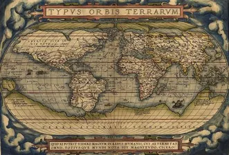
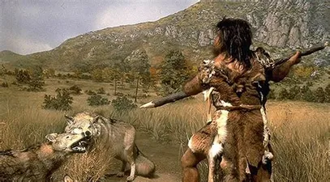
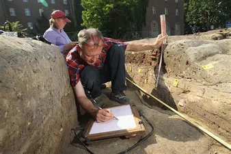

History(from Greek means to inquiry or "knowledge acquired by investigation")
Events before the invention of writing systems are considered prehistory. "History" is an umbrella term comprising past events as well as the memory, discovery, collection, organization, presentation, and interpretation of these events. Historians seek knowledge of the past using historical sources such as written documents, oral accounts, art and material artifacts, and ecological markers.
History is also an academic discipline which uses narrative to describe, examine, question, and analyze past events, and investigate their patterns of cause and effect. Historians often debate which narrative best explains an event, as well as the significance of different causes and effects. Historians also debate the nature of history as an end in itself, as well as its usefulness to give perspective on the problems of the present.
Stories common to a particular culture, but not
supported by external sources (such as the tales
surrounding King Arthur), are usually classified as
cultural heritage or legends. History differs
from myth in that it is supported by evidence.
However, ancient cultural influences have helped
spawn variant interpretations of the nature of history
which have evolved over the centuries and continue
to change today. The modern study of history is
wide-ranging, and includes the study of specific
regions and the study of certain topical or thematic
elements of historical investigation. History is
often taught as part of primary and secondary
education, and the academic study of history is a
major discipline in university studies.
Herodotus, a 5th-century BC
Greek historian, is
often considered the "father of history" in the
Western tradition, although he has also been
criticized as the "father of lies". Along
with his contemporary Thucydides, he helped form
the foundations for the modern study of past
events and societies. Their works continue to be
read today, and the gap between the culture-
focused Herodotus and the military-focused
Thucydides remains a point of contention or
approach in modern historical writing. In East
Asia, a state chronicle, the Spring and
Autumn Annals, was reputed to date from as
early as 722 BC, although only 2nd-century
BC texts have survived.